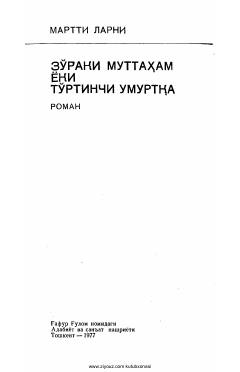

ZMAmerika jamiyatidagi illatlarni fosh etuvchi o'tkir satirik roman.
Fin yozuvchisi Martti Larnining ushbu mashhur romani Amerika jamiyatidagi illatlarni o'tkir satira va karikatura orqali fosh etadi. Asar bosh qahramon Ieremiya Suomalaynenning hayot yo'li va jamiyatdagi o'zgarishlar fonida insoniy qadriyatlar hamda axloqiy masalalarni tahlil qiladi.